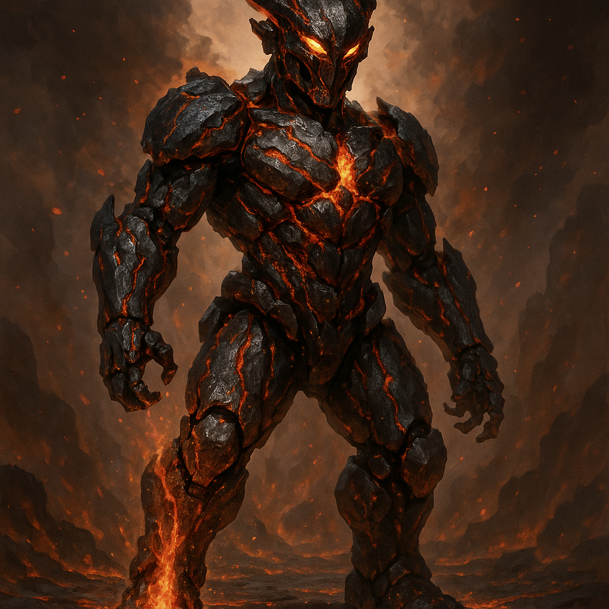

Ashcore

Name & Alias: Ashcore – The Volcanic Tyrant
Age / Race / Role: Unknown / Kinetican – Magma-Class / Terrain Destroyer, Heavy Assault Unit
Appearance: Molten metal skin with internal magma veins. Heavy armored limbs and glowing orange fissures across the body.
Affinities & Energy Types: Fire, Earth, Kinetic
Threat Tier: S-Rank
Core Stats (0–10):
• Power: 10
• Speed: 5
• Technique: 7
• Intelligence: 6
• Defense: 10
• Aura Control: 6
Signature Abilities:
• Magma Slam Barrage
• Ashwave Detonation
• Volcanic Core Charge
• Obsidian Fist Cannon
• Eruption Ground Crush
Personality Summary: Brutish, loyal to command. Prefers destruction over conversation. Built for domination.
Faction or Allegiances: Kinetican Forces